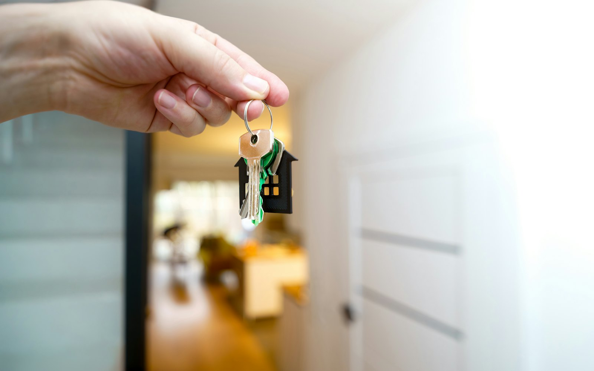

Comprá, Alquilá o Vendé y recibí la atención personalizada de más de 10 años de experiencia que nos avalan.
¿Tenés una propiedad para vender o alquilar?
Empezá por saber cuánto vale: solicitá una tasación hecha por martillero matriculado.
- TasaciónVisitamos la propiedad y te damos un valor fundado.
- PublicaciónFotos, ficha y difusión en el sitio y los portales.
- VisitasCoordinamos y acompañamos cada visita.
- CierreReserva, seña y firma, con la matrícula detrás.

Por dónde empezar
¿Qué estás buscando?
Dónde
Encontrá una zona para vos
La inmobiliaria
Quiénes somos
Somos una inmobiliaria con sólida presencia en la zona de La Plata, dirigida por Mauro Stranieri, martillero y corredor público matriculado. Trabajamos la venta y el alquiler de casas, departamentos, terrenos y campos en La Plata, Dolores y Bavio.
Acompañamos la operación de principio a fin — tasación, publicación, visitas y cierre — y cada una se firma con el respaldo de la matrícula, con más de 10 años de experiencia que nos avalan.
Lo que dicen
Clientes
Pendiente: mandame tres comentarios reales de clientes y los pongo acá con nombre y operación. No invento reseñas: van las que te dieron de verdad.
¿No encontraste lo que buscabas?
Decinos qué estás buscando y en qué zona. Si entra algo que encaja, te avisamos antes de publicarlo.